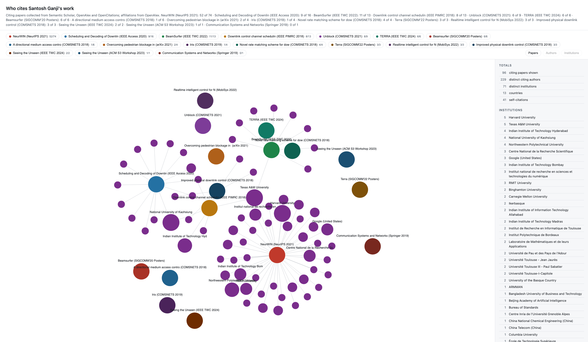
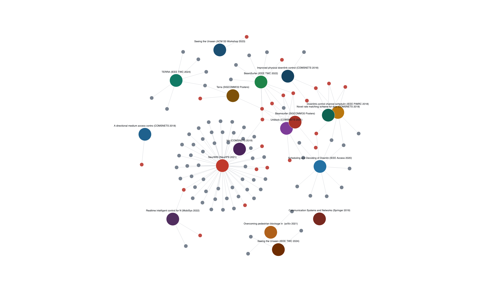
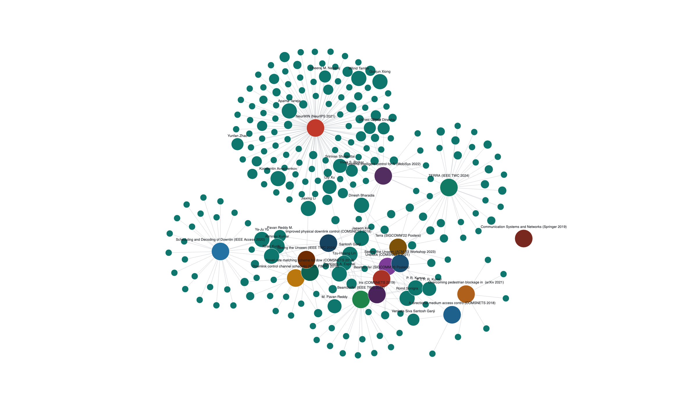

The map
This is the real page, for one profile of 20 publications. Nothing is pre-rendered.

Drag to pan, scroll to zoom, click a chip to drop a publication. Open it full screen Four most-cited papers only
{kind=link}

{kind=link}


Google Scholar shows a citation count. This shows the people behind the count. Which labs read your papers. Which institutions. Which countries. How many cite you independently of your own co-authors.
One command turns a list of your titles into an interactive map, four spreadsheets and a set of images you can put in a talk.
A count tells a panel how much. A named list of institutions tells them how far.
One title per line, copied off your Scholar profile.
Venue and Scholar count may follow a bar. Both are optional and only feed the coverage check.
NeurWIN: Neural Whittle index network for
restless bandits via deep RL
BeamSurfer: Minimalist beam management of
mobile mm-wave devices
# with the optional extras
NeurWIN: Neural Whittle index network | NeurIPS 2021 | 74
No API keys are needed. The address only puts you in the faster Crossref and OpenAlex pool.
Allow about twenty seconds per paper. A 20-paper profile takes around ten minutes, and each stage is printed as it runs.
pip install -r requirements.txt
export CITATION_MAP_EMAIL=you@example.com
python3 scripts/run.py --titles my_papers.txt \
--name "Your Name" --images
It opens in any browser and needs no network. Drag to pan, scroll to zoom, switch between the three views.
--images also writes a PNG of each view, sized for slides
and posters.
open citation_map.html
# what --images writes
images/citation_map_papers.png
images/citation_map_authors.png
images/citation_map_institutions.png
This is the real page, for one profile of 20 publications. Nothing is pre-rendered.

Drag to pan, scroll to zoom, click a chip to drop a publication. Open it full screen Four most-cited papers only


| Path | Contents |
|---|---|
| citation_map.html | the interactive page, self-contained and offline |
| images/ | a PNG per view, sized for slides and posters |
| tables/ | four CSVs: citing papers, authors, institutions, countries |
| graphs/ | PNG, plus GraphML and GEXF for Gephi or Cytoscape |
| data/ | the raw API responses and the cleaned records |
tables/citing_authors.csv is the one to read
first. One row per person: how many of your papers they cite, their
institution, and whether they are a co-author.
Google Scholar will not serve its own "Cited by" pages, because a CAPTCHA sits in front of them. So four open APIs stand in.

Every row records the source it came from, and the build reports collected against Scholar for each paper. The input file, the raw API responses and every output are committed under examples/ganji, so these numbers can be checked.
Coverage is reported per paper against Scholar's own count, so the shortfall is visible in the output rather than hidden.
Theses, workshop papers, unindexed preprints and non-English venues are thinly covered by these APIs. Older and smaller conferences suffer most. The example reached 118 rows against Scholar's 192.
None of the four APIs index them. Three patents account for 24 of the example's shortfall and cannot be recovered.
OpenAlex often stores no institution for IEEE conference records and arXiv preprints. Crossref stores a postal address instead of an organisation name, which the build reduces heuristically.
"M. Tambe" and "Milind Tambe" count as one person. Two different authors sharing a surname and first initial would be counted once.